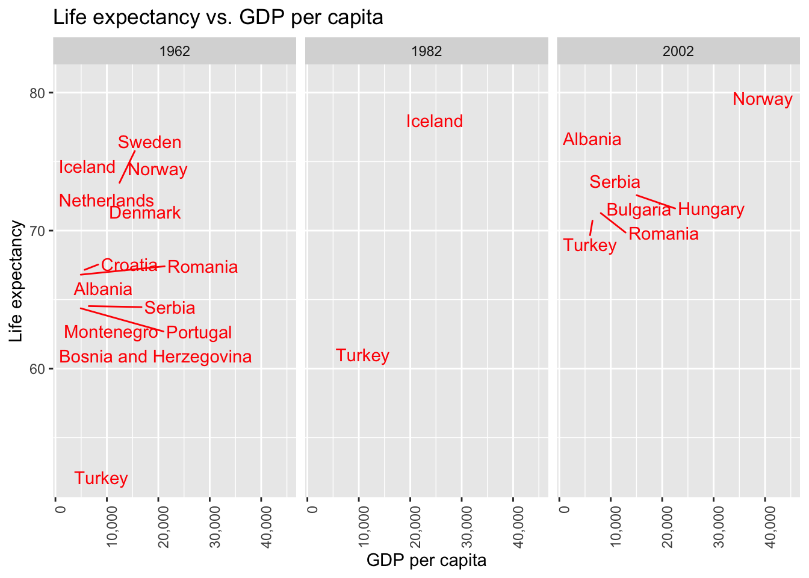
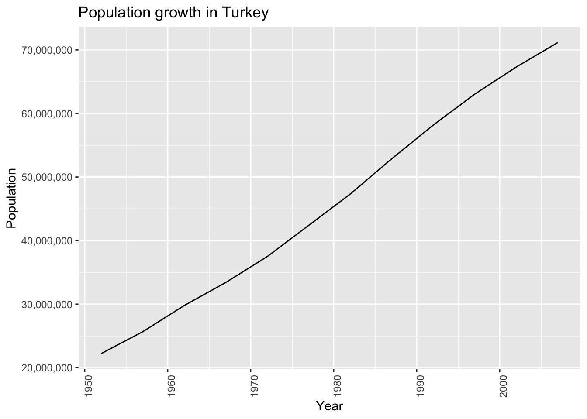
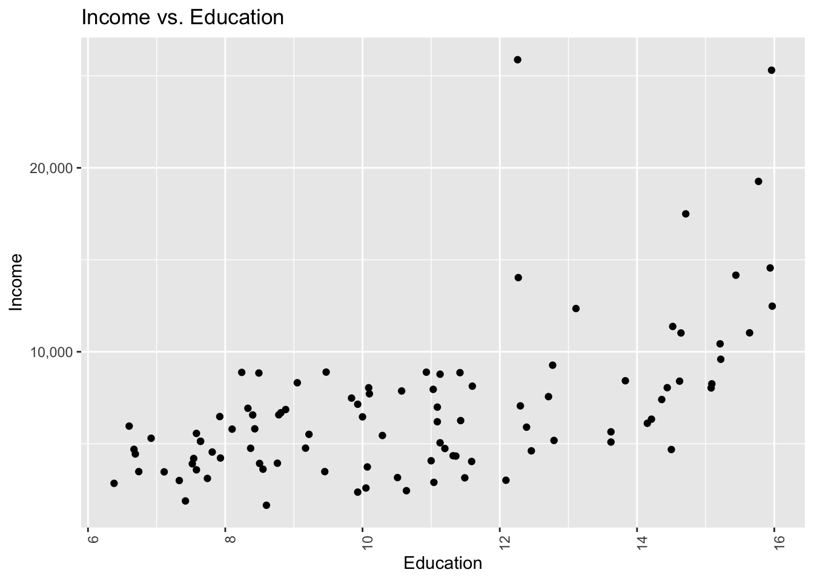
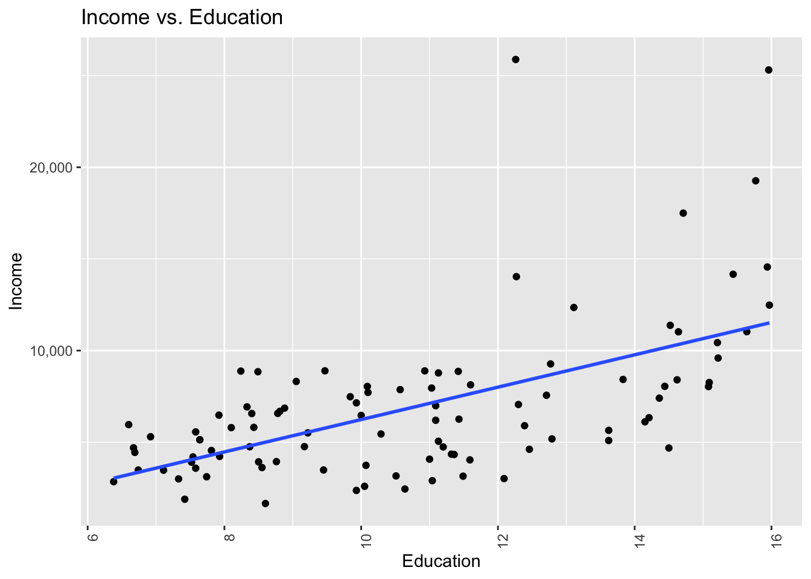
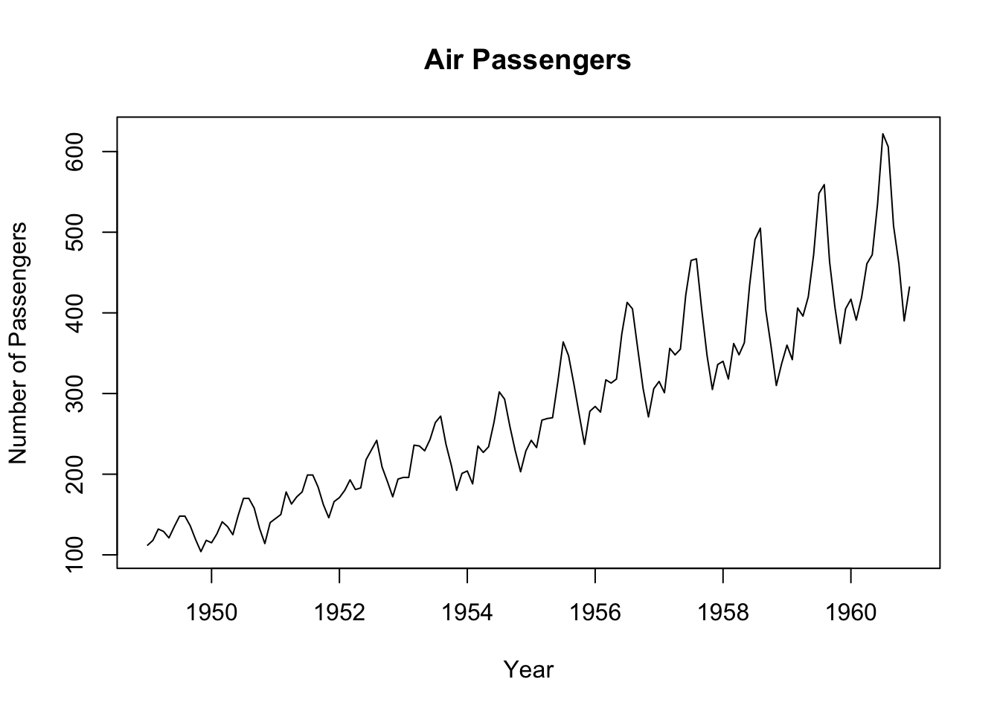
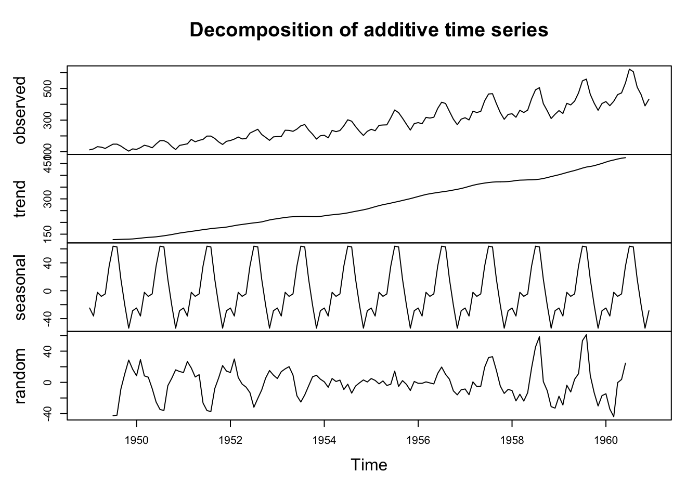
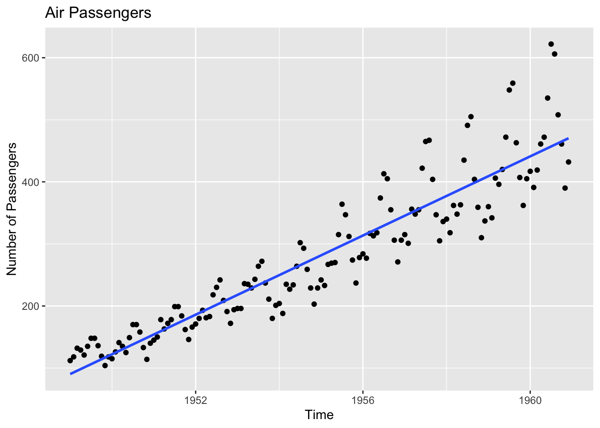

Chapter 4 Inferential statistics
4.1 Answers to Exercise Questions
- What years of information are included in the Gapminder data? Tip:
You can find this out with the
unique()command.
## [1] 1952 1957 1962 1967 1972 1977 1982 1987 1992 1997 2002 2007- What are the mean and median of life years in 1962 and 2002? Tip:
You can do this with the
filter()function.
# Your answer:
df %>%
filter(year == 1962 | year == 2002) %>%
group_by(year) %>%
summarise(mean(lifeExp), median(lifeExp))## # A tibble: 2 × 3
## year `mean(lifeExp)` `median(lifeExp)`
## <int> <dbl> <dbl>
## 1 1962 53.6 50.9
## 2 2002 65.7 70.8- Can you create a scatterplot of income (x-axis) and years of life
expectancy (y-axis) for the European continent in 1962, 1982 and
2002 using
ggplot()andfacet_wrap()? Country names must appear as text. Tip: after filtering the data by these years you will need to callfacet_wrap(~year).
# Your answer:
library(ggrepel)
df %>%
filter(year == 1962 | year == 1982 | year == 2002) %>%
filter(continent == "Europe") %>%
ggplot(aes(x = gdpPercap, y = lifeExp, label = country)) +
geom_text_repel(color="red") +
facet_wrap(~year) +
labs(x = "GDP per capita", y = "Life expectancy", title = "Life expectancy vs. GDP per capita") +
scale_x_continuous(labels = scales::comma) +
theme(axis.text.x = element_text(angle = 90, hjust = 1))
- Can you create a line plot and show Turkey’s population growth? Can
you name the plot and axes? Tip: you will need to use the
geom_line()function to create the line chart.
# Your answer:
df %>%
filter(country == "Turkey") %>%
ggplot(aes(x = year, y = pop)) +
geom_line() +
labs(x = "Year", y = "Population", title = "Population growth in Turkey") +
theme(axis.text.x = element_text(angle = 90, hjust = 1)) +
# no scientific notation
scale_y_continuous(labels = scales::comma)
4.2 Creating summary tables and performing simple data analysis with Dplyr
We will work with a dataset named “prestige” now. The data looks like the following:
| education | income | women | prestige | census | type | |
|---|---|---|---|---|---|---|
| gov.administrators | 13.11 | 12351 | 11.16 | 68.8 | 1113 | prof |
| general.managers | 12.26 | 25879 | 4.02 | 69.1 | 1130 | prof |
| accountants | 12.77 | 9271 | 15.70 | 63.4 | 1171 | prof |
| purchasing.officers | 11.42 | 8865 | 9.11 | 56.8 | 1175 | prof |
| chemists | 14.62 | 8403 | 11.68 | 73.5 | 2111 | prof |
| physicists | 15.64 | 11030 | 5.13 | 77.6 | 2113 | prof |
Let’s import it first:
4.3 group_by() and summarize()
We can extract summary tables using these functions in the Dplyr
package. Dplyr creates group-based summaries with group_by(). We can
also make the calculations we want with summarize():
df %>%
group_by(type) %>%
summarize(mean_prestige = mean(prestige),
mean_income = mean(income)) %>%
arrange(mean_income)## # A tibble: 4 × 3
## type mean_prestige mean_income
## <fct> <dbl> <dbl>
## 1 <NA> 34.7 3344.
## 2 wc 42.2 5052.
## 3 bc 35.5 5374.
## 4 prof 67.8 10559.Let’s omit the NA values:
Find out the percentage of female workers according to the types of professions:
## # A tibble: 3 × 2
## type woman_perc
## <fct> <dbl>
## 1 bc 19.0
## 2 prof 25.5
## 3 wc 52.8We want to see the relationship between education and income. Let’s create a scatter plot for this:
df %>%
ggplot(aes(x = education, y = income)) +
geom_point() +
labs(x = "Education", y = "Income", title = "Income vs. Education") +
theme(axis.text.x = element_text(angle = 90, hjust = 1)) +
# no scientific notation
scale_y_continuous(labels = scales::comma)
4.4 Linear Regression
We noticed that there is a relationship between education and income, but can we confirm this with statistics? Why do we need statistics?
If you want to go beyond our data and find out whether the results are generalizable to the whole world, we need to model. With a linear regression analysis, we will create a line that explain our data best. Also, we will be able to predict situations that are not observed in our data set. Let’s first understand what linear regression is:
In the context of simple linear regression, the dependent variable’s (the outcome variable) value is determined by a linear function of the predictor variable, expressed as:
y = \(\alpha\) + \(\beta\) x
Let’s delve into the interpretation of these components:
Y (dependent variable) = \(\alpha\) (intercept) + \(\beta\) (slope) X (predictor)
In this equation:
Y represents the dependent variable,
\(\alpha\) is the intercept, an additive term,
\(\beta\) is the slope, another additive term,
X is the predictor variable.
Mathematically, a line is characterized by an intercept and a slope. The slope \(\beta\)) signifies the change in y for a one-unit change in x.
In simpler terms, the slope represents the rate of change of the dependent variable y with respect to changes in the predictor variable x.
Let’s create a linear regression model for our data:
##
## Call:
## lm(formula = income ~ education, data = df)
##
## Residuals:
## Min 1Q Median 3Q Max
## -5524 -2400 -186 1398 17647
##
## Coefficients:
## Estimate Std. Error t value Pr(>|t|)
## (Intercept) -2593.4 1431.4 -1.812 0.0731 .
## education 883.0 128.5 6.870 6.4e-10 ***
## ---
## Signif. codes: 0 '***' 0.001 '**' 0.01 '*' 0.05 '.' 0.1 ' ' 1
##
## Residual standard error: 3480 on 96 degrees of freedom
## Multiple R-squared: 0.3296, Adjusted R-squared: 0.3226
## F-statistic: 47.2 on 1 and 96 DF, p-value: 6.404e-10The first thing we need to look at is the coefficient. The coefficient is the slope of the line. In our case, the coefficient is 898.8. This means that for every one unit increase in education, income increases by 898.8.
Then we can look at the p-value. The p-value is the probability that the observed data occurs with the assumption that education does not have an effect on income. In our case, the p-value is 2.079e-10 (a very small number), close to 0. This is a very small number, so we can say reject the previous assumption. In other words, we can say that there is a statistically significant relationship between education and income.
Finally, let’s examine the R-squared value. R-squared is a statistical measure of how close the data are to the fitted regression line. It is also known as the coefficient of determination, or the coefficient of multiple determination for multiple regression. The definition of R-squared is fairly straight-forward; it is the percentage of the response variable variation that is explained by a linear model.
In our case, the R-squared value is 0.3336. This means that 33.36% of the variation in income is explained by education. This is a good value for social sciences.
Let’s plot the regression line:
df %>%
ggplot(aes(x = education, y = income)) +
geom_point() +
labs(x = "Education", y = "Income", title = "Income vs. Education") +
theme(axis.text.x = element_text(angle = 90, hjust = 1)) +
# no scientific notation
scale_y_continuous(labels = scales::comma) +
geom_smooth(method = "lm", se = FALSE)
We can also predict future values with our model with the predict()
function.
# predict income for 10 years of education
new_data <- data.frame(education = 10)
predict(model, new_data)## 1
## 6236.767# predict income for 20 years of education
new_data <- data.frame(education = 20)
predict(model, new_data)## 1
## 15066.95# predict income for 30 years of education
new_data <- data.frame(education = 30)
predict(model, new_data)## 1
## 23897.144.5 Time Series Data Analysis
Now let’s work with time series data. We will use the AirPassengers
dataset in R. This dataset contains the number of passengers who
traveled by plane in a month between 1949 and 1960. Let’s import it
first:
## [1] 112 118 132 129 121 135We then need to convert the data to a time series object which is a
special type of object in R. We will use the ts() function for this.
We need to specify the frequency of the data (12 for monthly data) and
the start and end dates.
# convert the data to a time series object
df <- ts(df, frequency = 12, start = c(1949, 1), end = c(1960, 12))
head(df)## [1] 112 118 132 129 121 135# plot the data with axis names:
plot(df, main = "Air Passengers", xlab = "Year", ylab = "Number of Passengers")
We can see that there is an increasing trend in the data. We can also
see that there is a seasonal component. We can decompose the data into
trend, seasonal, and random components with the decompose() function.
Let’s explain the components: Trend is the long-term progression of the series. Seasonality is a short-term cycle that occurs regularly. Random is the residual variation that cannot be explained by the trend or the seasonal components.

We can use linear regression to model the trend component. We will use
the lm() function for this. We will use the time() function to
create a variable for time.
# turn our ts object into a data frame
df_time_series <- data.frame(Y=as.matrix(df), Time = time(df))Model the trend component:
model <- lm(Y ~ Time, data = df_time_series)
# summary(model)
# plot the regression line:
df_time_series %>%
ggplot(aes(x = Time, y = Y)) +
geom_point() +
labs(x = "Time", y = "Number of Passengers", title = "Air Passengers") +
geom_smooth(method = "lm", se = FALSE)
Now let’s predict the number of passengers for the next 10 years:
## 1 2 3 4 5 6 7 8
## 759.9203 791.8065 823.6927 855.5789 887.4651 919.3513 951.2375 983.1238
## 9 10 11
## 1015.0100 1046.8962 1078.78244.6 In-class Exercises
1.1. Work with the mtcars dataset. Use group_by() and summarize()
to find the average miles per gallon for each number of cylinders.
1.2. Create a linear regression model. Predict the miles per gallon for a car with 6 cylinders and a weight of 3000 lbs.
1.3. Plot the regression line.
2.1. Work with another time series dataset called BJsales in R.
Sales, 150 months; taken from Box and Jenkins (1970). Visualize the time
series data.
2.2. Use linear regression to model the trend component. Predict the number of sales for the next 10 months
2.3. Plot the regression line.